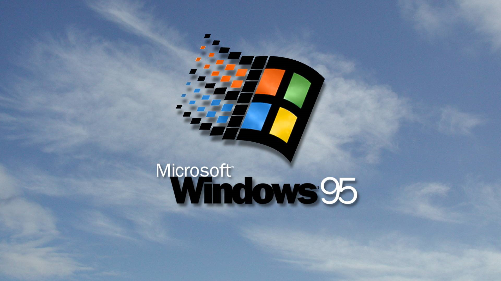
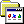
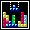
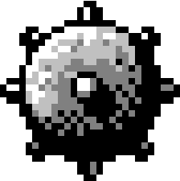
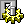
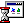
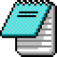
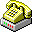

Arrange Icons ►
Lin
e
up Icons
P
aste
Paste
S
hortcut
Ne
w
►
P
r
operties
Start

P
rograms ►
Blockbuster
Music Player

Tetris

Minesweeper
D
ocuments ►
ReadMe
null

S
ettings
R
eadMe
H
elp

R
un...
Sh
u
t Down...
My Computer

Notepad
this_is_not_my_family
Paint

Comments